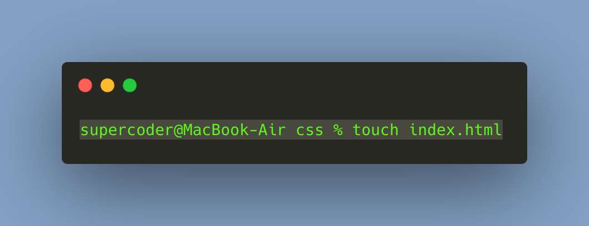

pwd -- return working directory name
Go back to commands listCommands list
pwd

ls
ls -- list directory contents
Go back to commands listls -a

ls -a -- list hidden directory contents
Go back to commands listcd

cd -- Change directory
Go back to commands listcd ..

cd .. -- Change directory backward
Go back to commands listmkdir
mkdir -- Make directory
Go back to commands listmkdir -p
mkdir -- Make directory and sub-directories parent_dir/child_dir/etc
Go back to commands listtouch
touch -- Create file
Go back to commands listrm
rm -- remove directory entries
Go back to commands listrm -r
rm -- remove directory
Go back to commands listmv
mv -- move files or rename file
Go back to commands listcp
cp -- copy files
Go back to commands listcat

cat -- concatenate and print files
Go back to commands listnano
nano -- nano is a small, free and friendly editor
Go back to commands listman
man - display the on-line manual pages
Go back to commands list